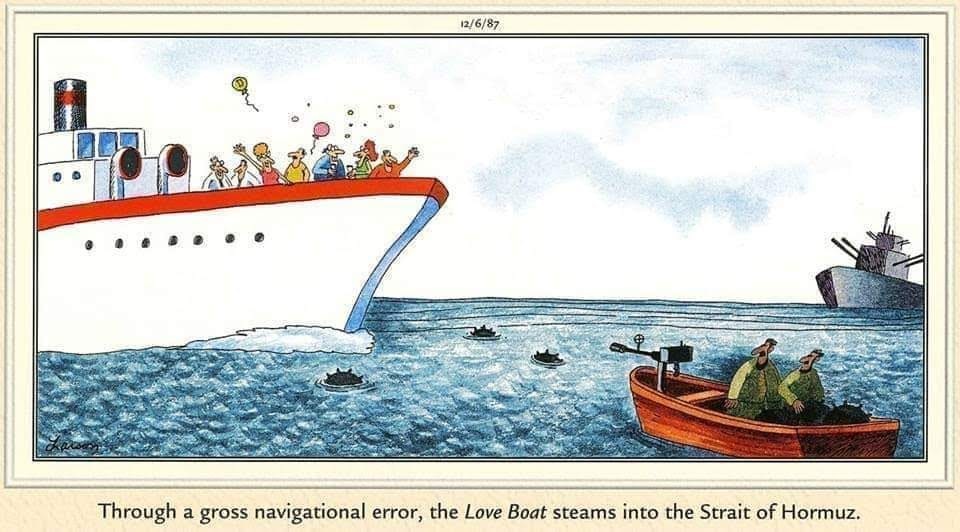

On the 28th of February 2026, Donald Trump and Benjamin Netanyahu unilaterally decided to attack the Islamic Republic of Iran, without provocation. As part of this illegal strike on a sovereign state, the Republic shut down all traffic through the Strait of Hormuz. This entire unprovoked attack and subsequent crippling blow to the world's economy could have been avoided.
Since the 28th of February, the Strait of Hormuz has been soft-blockaded for all but three hours on the 8th of April.
America, remember this: your vote matters. Don't stay home next time.
Timeline of Events
- 13 April 2026 12:00 UTC: United States begins preparations to blockade the Strait of Hormuz.
- 8 April 2026 15:02 UTC: Iran re-closes the Strait in response to Israeli attacks on Hezbollah.
- 8 April 2026 12:18 UTC: Iran reopens the Strait in response the the tentative two-week cease-fire between the United States and Iran.
- 27 March 2026 10:38 UTC: Iran Revolutionary Guard (IRGC) announces closure of the Strait to all ships bound to the United States and allies.
- 2 March 2026 05:30 UTC: Iran effectively closes the Strait of Hormuz by attacking the MT Skylight, a Palauian oil tanker en route to India, in retaliation to the attacks.
- 28 Feb 2026 20:28 UTC: United States and Israel strike Iran, killing Ayatollah Ali Khameni.
Relvant Comics

Live Updates
- Iran War Report - Reddit
- Live updates: Current breaking news on Iran / US combat - NBC News
- Iran War Live Updates - New York Times
Recent News Articles
- United States set to blockade the Strait of Hormuz - BBC News via YouTube - 13 April 2026
- Iran closes Strait of Hormuz again in response to Israeli strikes on Lebanon - Hindustan Times - 8 April 2026
- The Strait of Hormuz crisis affects more than just oil - World Economic Forum - 7 April 2026
- Do Trump's threats to Iran amount to a war crime? - Christian Science Monitor - 7 Apr 2026
- The Iran Strikes, Explained - American Jewish Committee - 23 March 2026
- Bombing of civilian infrastructure aims to bring Iran to its knees - Le Monde - 11 March 2026